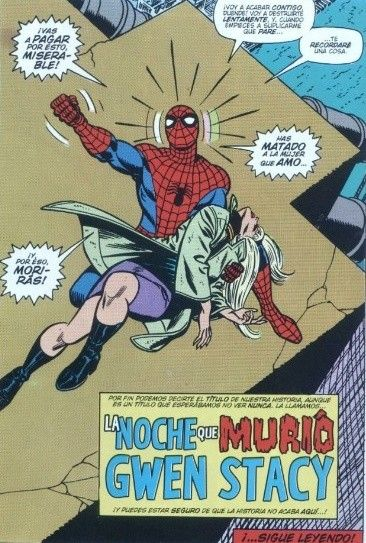

ASM #121

La muerte de Gwen Stacy
| Número | #121 |
| Fecha | Junio de 1973 |
| Guionista | Gerry Conway |
| Dibujante | Gil Kane |
| Entintador | John Romita Sr. |
Sinopsis
Uno de los momentos más cruciales e impactantes en la historia de las viñetas. El Duende Verde (Norman Osborn) regresa con su memoria recuperada y sed de venganza. Tras secuestrar a Gwen Stacy, el gran amor de Peter Parker, la lleva a lo alto del puente de Brooklyn. Spider-Man acude al rescate, pero se enfrenta a una tragedia que cambiará su vida y el mundo de los cómics para siempre.